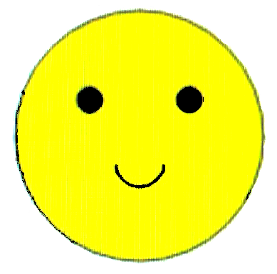

Developmental Work
What I enjoy most about development is the satisfaction of when everything comes together to createa a cohesive product. Especially if there are multiple people working on the project, to me there is nothing more rewarding than finally working out all the bugs and presenting something I am proud of.
Even though I would be a developer, what most excites me about the DALI Lab is a chance to work with the designers. Usually, I am only working with other programmers or supervisors on a project, so I am greatly looking forward to talking with artists and collaborating to fuse art and technology in ways I haven't thought of before.
I consider myself proficient in C, C++, C#, Java, Python, Ruby, HTML, CSS, and Javascript. I pride myself on always commenting my code and creating efficient readable programs. I have experience working in teams and I have programmed outside of class for clients.
This is the very first thing I ever designed back in CS 1. Look How happy he is! More than anything else, I want to create things that make people happy.